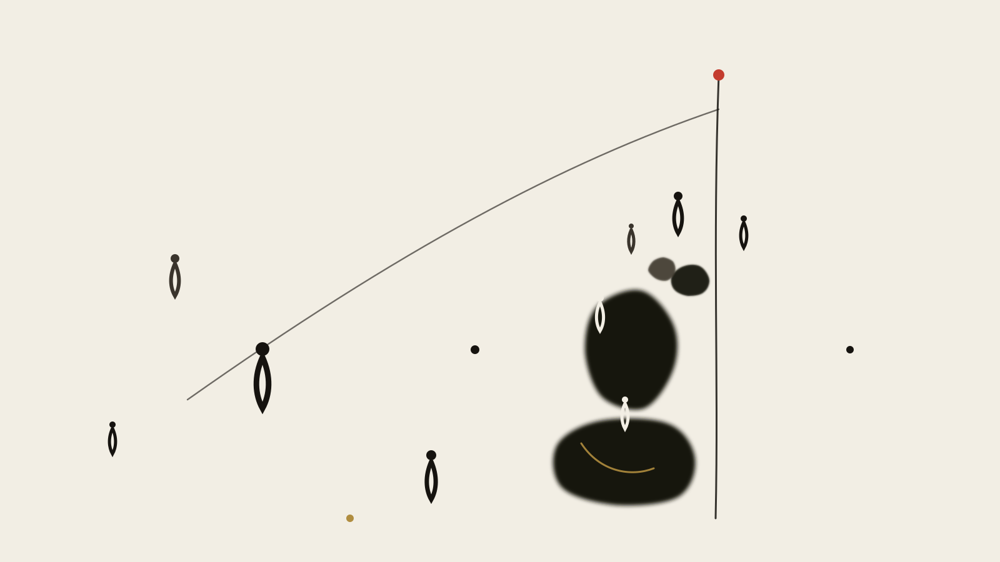

《硅基神殿的隐喻》第 3 篇 · 文明与历史 · 共 5 篇
第三篇：轴心的倒流


硅基神殿的隱喻 · 軸心的倒流
《硅基神殿的隐喻》第 3 篇 · 文明与历史 · 共 5 篇

公元前 399 年，雅典。一場審判，罪名是"不敬神"和"敗壞青年"。
柏拉圖在《國家篇》裡記下了這場審判的結局：蘇格拉底被判有罪，處死。而根據柏拉圖在《斐多篇》裡的記述，行刑的那天，蘇格拉底還在跟學生討論"靈魂是否會在死後繼續存在"。
他被判死刑的原因之一，是他不停地問問題。
具體說，是他問"什麼是正義"。這個問題的麻煩之處在於：它沒有可接受的答案。說"強者即正義"，那是給暴政背書；說"約定即正義"，那是把現狀神聖化；說"我不知道"，在城邦的政治場裡等於不存在。
而在這同一本書裡，柏拉圖安排了一個更早的場景——洞穴。
一個洞穴，囚徒從出生就被鎖在裡面，脖子不能轉，只能看見正前方牆上跳動的影子。他們不知道那是火把在牆上投的影子，以為那就是世界 themselves 的全部現實。直到有人掙脫鎖鏈，爬出洞口，回頭看見太陽。
《國家篇》第七卷，514a–520a。
洞穴這個比喻之所以流傳兩千四百年，是因為它把一個抽象的認知處境變成了一個物理場景：影子、火光、爬行、回頭、眼睛被刺痛。
今天我想說的是：AI 正在成為那個影子。
不，比影子更復雜一點。AI 不是牆上一個被誤認成現實的圖像——它是人類心智自己投在牆上的投影的自動化版本。
這一篇講的比這更慢一些。我想說的是：人類心智歷史上第一次產生"爬出洞穴"的衝動，是什麼時候；那件事為什麼被叫做軸心時代；而今天這件事正在發生什麼。
公元前 399 年，雅典。一场审判，罪名是"不敬神"和"败坏青年"。
柏拉图在《国家篇》里记下了这场审判的结局：苏格拉底被判有罪，处死。而根据柏拉图在《斐多篇》里的记述，行刑的那天，苏格拉底还在跟学生讨论"灵魂是否会在死后继续存在"。
他被判死刑的原因之一，是他不停地问问题。
具体说，是他问"什么是正义"。这个问题的麻烦之处在于：它没有可接受的答案。说"强者即正义"，那是给暴政背书；说"约定即正义"，那是把现状神圣化；说"我不知道"，在城邦的政治场里等于不存在。
而在这同一本书里，柏拉图安排了一个更早的场景——洞穴。
一个洞穴，囚徒从出生就被锁在里面，脖子不能转，只能看见正前方墙上跳动的影子。他们不知道那是火把在墙上投的影子，以为那就是世界 themselves 的全部现实。直到有人挣脱锁链，爬出洞口，回头看见太阳。
《国家篇》第七卷，514a–520a。
洞穴这个比喻之所以流传两千四百年，是因为它把一个抽象的认知处境变成了一个物理场景：影子、火光、爬行、回头、眼睛被刺痛。
今天我想说的是：AI 正在成为那个影子。
不，比影子更复杂一点。AI 不是墙上一个被误认成现实的图像——它是人类心智自己投在墙上的投影的自动化版本。
这一篇讲的比这更慢一些。我想说的是：人类心智历史上第一次产生"爬出洞穴"的冲动，是什么时候；那件事为什么被叫做轴心时代；而今天这件事正在发生什么。
In Plato's Phaedrus, Socrates walks beyond the walls of Athens—an exceedingly rare excursion for a thinker who insisted that trees and fields could teach him nothing, while the men in the city could teach him everything.
Sitting beneath a plane tree beside the Ilissus, Socrates recounts an Egyptian myth to young Phaedrus.
The god Theuth (Thoth)—inventor of arithmetic, geometry, astronomy, and dice—presents his greatest creation, the written word, to King Thamus of Egypt. The god boasts: "O King, here is an art that will make the Egyptians wiser and improve their memory; I have discovered an elixir of memory and wisdom."
King Thamus responds with profound skepticism:
"O most ingenious Theuth, one man has the ability to beget arts, another the ability to judge their utility. You, the father of letters, have been led by affection to attribute to them the opposite of their real effect. For this invention will produce forgetfulness in the minds of those who learn to use it, because they will not practice their memory... You offer your disciples the appearance of wisdom, not its reality."
Twenty-four hundred years later, humanity sits before the large language model.
Once again, Theuth stands before us, offering an elixir: an engine that drafts our essays, synthesizes our research, debugs our code, and anticipates our desires. And once again, humanity erupts in unanimous acclaim.
Except this time, there is no King Thamus under the plane tree to state the price.
1949 年，德國哲學家卡爾·雅斯貝爾斯（Karl Jaspers）出版《歷史的起源與目標》（Vom Ursprung und Ziel der Geschichte），提出了一個後來被反覆引用、也反覆被質疑的概念：軸心時代（Axial Age）。
他的定義很簡單：公元前 800 年到前 200 年之間，在幾個互不相關的地區，幾乎同時發生了一次心智上的突變。希臘有蘇格拉底、柏拉圖、亞里士多德；中國有孔子、老子、墨子、孟子；以色列有先知；古印度有奧義書和沙門思潮；波斯有瑣羅亞斯德。
共同點是什麼？
雅斯貝爾斯用的一個詞是"垂直軸"（vertikale Achse）。他的觀察是：在軸心時代之前，人類心智的聯結主要是水平的——部落、圖騰、神話、共同體的橫向聯結。人屬於某個神話，那個神話解釋一切。
軸心時代發生的轉變是：人類心智開始向上提問。
從"神話解釋一切"到"追問一切"。 從橫向聯結到垂直向上。雅斯貝爾斯認為，這一次躍遷不是任何單一地區發明的，而是幾個文明各自獨立完成的——所以它不像是傳播的結果，更像是人類心智結構在某個階段必然會發生的變化。
這個概念有爭議。 批評主要來自兩點：一是"軸心"這個提法帶有強烈的歐洲中心主義框架，把所有文明塞進一個時間窗；二是"同時發生"這個判斷在史學上證據薄弱。後面第四篇會回到這個批評。
現在先接受它的力量。 垂直軸這個意象，足以支撐這一整篇。
1949 年，德国哲学家卡尔·雅斯贝尔斯（Karl Jaspers）出版《历史的起源与目标》（Vom Ursprung und Ziel der Geschichte），提出了一个后来被反复引用、也反复被质疑的概念：轴心时代（Axial Age）。
他的定义很简单：公元前 800 年到前 200 年之间，在几个互不相关的地区，几乎同时发生了一次心智上的突变。希腊有苏格拉底、柏拉图、亚里士多德；中国有孔子、老子、墨子、孟子；以色列有先知；古印度有奥义书和沙门思潮；波斯有琐罗亚斯德。
共同点是什么？
雅斯贝尔斯用的一个词是"垂直轴"（vertikale Achse）。他的观察是：在轴心时代之前，人类心智的联结主要是水平的——部落、图腾、神话、共同体的横向联结。人属于某个神话，那个神话解释一切。
轴心时代发生的转变是：人类心智开始向上提问。
从"神话解释一切"到"追问一切"。 从横向联结到垂直向上。雅斯贝尔斯认为，这一次跃迁不是任何单一地区发明的，而是几个文明各自独立完成的——所以它不像是传播的结果，更像是人类心智结构在某个阶段必然会发生的变化。
这个概念有争议。 批评主要来自两点：一是"轴心"这个提法带有强烈的欧洲中心主义框架，把所有文明塞进一个时间窗；二是"同时发生"这个判断在史学上证据薄弱。后面第四篇会回到这个批评。
现在先接受它的力量。 垂直轴这个意象，足以支撑这一整篇。
In Vom Ursprung und Ziel der Geschichte (1949), German philosopher Karl Jaspers proposed the foundational concept of the Axial Age (Achsenzeit), spanning roughly 800 to 200 BCE:
Across ancient Greece, Israel, Persia, India, and China—without physical coordination or communication—humanity experienced a simultaneous spiritual breakthrough.
In Greece: Socrates, Plato, Aristotle.
In Israel: Elijah, Isaiah, Jeremiah.
In Persia: Zoroaster.
In India: The Upanishads, the Buddha, Mahavira.
In China: Confucius, Laozi, Zhuangzi, Mozi.
What was the defining characteristic of this breakthrough?
Jaspers described it as the vertical leap of human consciousness: humanity awakened from the horizontal, unreflective slumber of cyclical myth, turning its gaze upward to interrogate transcendent reality, moral duty, the nature of knowledge, and the ultimate purpose of existence. Man ceased to merely inhabit the world; he began to examine himself examining the world.
Today, generative AI is engineering an Axial Reversal: - Where the Axial Age climbed from mythic slumber into radical individual reflection, the algorithmic regime descends from individual reflection back into automated, collective dreaming. - The vertical axis of metaphysical striving is flattened into a horizontal plane of statistical probabilities. - Consciousness ceases to wrestle with transcendent truth; it settles comfortably into the predictive mean of human text corpuses.
To understand the mechanics of this descent, we must examine three distinct historical moments that have collapsed into our contemporary present.
回到柏拉圖。
洞穴比喻的結構，可以拆成三步：
第一步：影子階段。 囚徒只能看見牆上跳動的光影。他們不僅不知道那是影子，他們甚至不知道自己不知道。他們沒有懷疑的渠道，因為懷疑需要"別的東西可以懷疑"這個概念——而他們手裡只有影子。
第二步：轉身階段。 有一個人掙脫了。他轉身，面對了洞壁和火堆，第一次看見"影子是影子，源頭是火"。這一步是痛苦且顛覆的——他看到的東西，直接否定了之前所有的經驗。
第三步：出洞階段。 他爬出洞口，看見外面的真實世界。但這裡有一個柏拉圖寫得很殘酷的細節：眼睛被陽光刺痛，一開始的反應是"影子比真相更真實"。 他寧願待在洞裡。
這三個階段，對應一個完整的認知轉變週期。 影子（無自覺）→ 轉身（認識自己是錯的）→ 出洞（看見真實，但一時難以承受）。
而我今天要說的是：影子這個階段，正在變成自動化的。
洞穴裡的影子有一個前提條件：必須有人在洞外舉著火把。 影子是人類的認知活動在牆上的投影——它依賴於人的存在、人的選擇、人的意圖。
而大語言模型，是這個投影的自動化實現。
這個類比需要被說清楚，否則聽起來太玄：
這就是為什麼我們會覺得"知道的比懂得的多"。
知道和懂得之間那條鴻溝，在洞穴裡是物理的——你必須爬。但在模型時代，它變成零成本的：你隨時可以問一個看起來什麼都懂的東西。
而這正是洞穴隱喻最鋒利的地方：
洞穴裡的囚徒之所以困住，不是因為他們懶。是因為影子在洞內就是完整的現實，而且它自洽。它不需要你相信什麼，它就在那裡，看起來是真實的。
模型給的答案就是這樣一個洞內的自洽系統。它流暢、內部一致、可以對任何問題給出回應。
問題不在於它給的答案是真是假。問題在於它把"知道"和"懂得"之間的那段爬行距離，壓縮成了零。
而那段距離，恰恰是理解得以發生的地方。
回到柏拉图。
洞穴比喻的结构，可以拆成三步：
第一步：影子阶段。 囚徒只能看见墙上跳动的光影。他们不仅不知道那是影子，他们甚至不知道自己不知道。他们没有怀疑的渠道，因为怀疑需要"别的东西可以怀疑"这个概念——而他们手里只有影子。
第二步：转身阶段。 有一个人挣脱了。他转身，面对了洞壁和火堆，第一次看见"影子是影子，源头是火"。这一步是痛苦且颠覆的——他看到的东西，直接否定了之前所有的经验。
第三步：出洞阶段。 他爬出洞口，看见外面的真实世界。但这里有一个柏拉图写得很残酷的细节：眼睛被阳光刺痛，一开始的反应是"影子比真相更真实"。 他宁愿待在洞里。
这三个阶段，对应一个完整的认知转变周期。 影子（无自觉）→ 转身（认识自己是错的）→ 出洞（看见真实，但一时难以承受）。
而我今天要说的是：影子这个阶段，正在变成自动化的。
洞穴里的影子有一个前提条件：必须有人在洞外举着火把。 影子是人类的认知活动在墙上的投影——它依赖于人的存在、人的选择、人的意图。
而大语言模型，是这个投影的自动化实现。
这个类比需要被说清楚，否则听起来太玄：
这就是为什么我们会觉得"知道的比懂得的多"。
知道和懂得之间那条鸿沟，在洞穴里是物理的——你必须爬。但在模型时代，它变成零成本的：你随时可以问一个看起来什么都懂的东西。
而这正是洞穴隐喻最锋利的地方：
洞穴里的囚徒之所以困住，不是因为他们懒。是因为影子在洞内就是完整的现实，而且它自洽。它不需要你相信什么，它就在那里，看起来是真实的。
模型给的答案就是这样一个洞内的自洽系统。它流畅、内部一致、可以对任何问题给出回应。
问题不在于它给的答案是真是假。问题在于它把"知道"和"懂得"之间的那段爬行距离，压缩成了零。
而那段距离，恰恰是理解得以发生的地方。
The first moment belongs to Plato's Republic (Book VII): The Allegory of the Cave.
Prisoners are chained from childhood inside a dark cavern, their heads immobilized, facing a blank wall. Behind them, a blazing fire burns. Between the fire and the prisoners, puppeteers carry wooden and stone statues of animals and men, casting flickering shadows upon the stone face.
The prisoners mistake the shadows for substance. When a shadow flickers and an echo bounces from the stone, they praise the man who best predicts which shadow will pass next.
Consider the generative AI interface: - What is a prompt-and-response window if not Plato's cave wall rendered in high-refresh OLED pixels? - Behind the glass, massive data centers burn gigawatts of electrical fire. - Foundation models process billions of crawled human sentences, projecting smooth, coherent, plausible linguistic shadows onto your terminal.
The terrifying evolution is not that the shadows exist; it is that the shadows have been fully automated, personalized, and interactive.
Plato's puppeteers were clumsy mortals; algorithmic puppeteers possess infinite patience and zero fatigue. When a programmer accepts a copilot's auto-completion without reading the underlying implementation, he is declaring that the shadow of the algorithm is indistinguishable from the light of architectural understanding.
He has voluntarily tightened his chains and returned to the cave floor.
洞穴是第一次爬升的隱喻。
但人類從來沒有停止過往上爬。軸心時代之後，中世紀、近代、啟蒙運動，每一次重大躍遷都伴隨著一個"往上"的方向：更純粹的理性、更高的知識、更大的組織。
而在今天，這個方向到達了一個前所未有的物質形式。
我把這個形式叫作數字巴別塔。這個名字來自《創世記》第十一章。
"那時，天下人言語一樣，都是一樣。…… 他們說：'來吧，我們建造一座城和一座塔，塔頂通天，為要傳揚我們的名。' 耶和華說：'他們本是同一族，都是一種語言；如今所作的，起初一樣，他們必能作完。' 於是耶和華從天上降臨，要看看世人所建造的城塔。…… 那塔停工，因為人在建造時言語混亂。耶和華就變亂他們的口舌，使他們不能彼此聽話。……那城名為 Babel（混亂）。"
這個文本的結構值得仔細看。
人類建塔的動機不是防禦，不是生產，不是居住。是"傳揚我們的名"。 塔的目的一開始就是自我指涉——不是為了到達某個地方，是為了讓別人知道我們在這裡、我們做了什麼。
而它的結局是語言被變亂。不是塔被摧毀，是溝通失敗。
這一點對理解 AI 時代特別重要，因為它和大眾對"巴別塔"的想象不一樣。 大部分人記得的是"通天"這個動作，是垂直向上的野心。但創世記文本里的懲罰不是"不許往上"，而是"讓你們無法彼此理解"。
如果要給數字時代找一個巴別塔敘事，更準確的說法不是"人類又建了一座通天之塔"，而是"人類正在建造一個傳揚自己的名的東西，而它內部正在變得無法彼此理解"。
回到 AI 時代的實際狀況。當一個系統被設計成"理解一切語言、掌握全人類知識、代表人類說話"的時候，它在結構上重現了巴別塔的每一個要素：
一、全世界的語言，一座塔。 訓練數據是全人類的文本——所有語言、所有時代、所有學科被打成一個整體。
二、目的一開始就是自我指涉。 模型的自我指涉有一個隱蔽的形式：它被訓練來生成"像人一樣"的東西。它不是為了傳揚某個人的名，是為了讓"人"這個概念在它內部可以無限延展。
三、結局是變亂——而且已經在發生了。
這一條我要具體說，因為它是可驗證的：
四、後果不是被摧毀，是無法彼此聽懂。 今天兩個用不同模型工作的人，面對同一個問題會得到兩種答案。兩個人用同一個模型，會得到幾乎相同的答案。這意味著：共識來自共享的模型，而不是共享的理解。
共享一個模型和共享一種理解，是完全不同的兩件事。
前者是技術統一，後者是認知統一。技術統一正在發生，認知統一沒有發生。
巴別塔的詛咒不是被拆掉，是變成了一群各自說不同方言的城。 每座城都很強大，每個城都以為自己說的是普通話。
關於創世記的這段文本，有一個常見的誤讀必須指出：《創世記》的巴別塔和希臘的通天塔（Prometheus 神話、塔利茲的兩座塔）不是同一個故事。 創世記裡上帝從天上降臨去看，塔沒有真的通天，是道德失敗（驕傲）的故事。希臘傳統裡，爬塔是英雄主義（儘管帶懲罰）。
這兩條傳統在西方文化里長期糾纏，但它們指向不同的東西：一個說"別往上爬"，一個說"爬，但會付代價"。而當代 AI 敘事，恰恰把兩者的姿態擰在一起：既要通天（AGI 的想象），又隱隱期待著懲罰（AI 安全焦慮）。
把這一點說清楚，比把巴別塔當成一個簡單的象徵要有用得多。
洞穴是第一次爬升的隐喻。
但人类从来没有停止过往上爬。轴心时代之后，中世纪、近代、启蒙运动，每一次重大跃迁都伴随着一个"往上"的方向：更纯粹的理性、更高的知识、更大的组织。
而在今天，这个方向到达了一个前所未有的物质形式。
我把这个形式叫作数字巴别塔。这个名字来自《创世记》第十一章。
"那时，天下人言语一样，都是一样。…… 他们说：'来吧，我们建造一座城和一座塔，塔顶通天，为要传扬我们的名。' 耶和华说：'他们本是同一族，都是一种语言；如今所作的，起初一样，他们必能作完。' 于是耶和华从天上降临，要看看世人所建造的城塔。…… 那塔停工，因为人在建造时言语混乱。耶和华就变乱他们的口舌，使他们不能彼此听话。……那城名为 Babel（混乱）。"
这个文本的结构值得仔细看。
人类建塔的动机不是防御，不是生产，不是居住。是"传扬我们的名"。 塔的目的一开始就是自我指涉——不是为了到达某个地方，是为了让别人知道我们在这里、我们做了什么。
而它的结局是语言被变乱。不是塔被摧毁，是沟通失败。
这一点对理解 AI 时代特别重要，因为它和大众对"巴别塔"的想象不一样。 大部分人记得的是"通天"这个动作，是垂直向上的野心。但创世记文本里的惩罚不是"不许往上"，而是"让你们无法彼此理解"。
如果要给数字时代找一个巴别塔叙事，更准确的说法不是"人类又建了一座通天之塔"，而是"人类正在建造一个传扬自己的名的东西，而它内部正在变得无法彼此理解"。
回到 AI 时代的实际状况。当一个系统被设计成"理解一切语言、掌握全人类知识、代表人类说话"的时候，它在结构上重现了巴别塔的每一个要素：
一、全世界的语言，一座塔。 训练数据是全人类的文本——所有语言、所有时代、所有学科被打成一个整体。
二、目的一开始就是自我指涉。 模型的自我指涉有一个隐蔽的形式：它被训练来生成"像人一样"的东西。它不是为了传扬某个人的名，是为了让"人"这个概念在它内部可以无限延展。
三、结局是变乱——而且已经在发生了。
这一条我要具体说，因为它是可验证的：
四、后果不是被摧毁，是无法彼此听懂。 今天两个用不同模型工作的人，面对同一个问题会得到两种答案。两个人用同一个模型，会得到几乎相同的答案。这意味着：共识来自共享的模型，而不是共享的理解。
共享一个模型和共享一种理解，是完全不同的两件事。
前者是技术统一，后者是认知统一。技术统一正在发生，认知统一没有发生。
巴别塔的诅咒不是被拆掉，是变成了一群各自说不同方言的城。 每座城都很强大，每个城都以为自己说的是普通话。
关于创世记的这段文本，有一个常见的误读必须指出：《创世记》的巴别塔和希腊的通天塔（Prometheus 神话、塔利兹的两座塔）不是同一个故事。 创世记里上帝从天上降临去看，塔没有真的通天，是道德失败（骄傲）的故事。希腊传统里，爬塔是英雄主义（尽管带惩罚）。
这两条传统在西方文化里长期纠缠，但它们指向不同的东西：一个说"别往上爬"，一个说"爬，但会付代价"。而当代 AI 叙事，恰恰把两者的姿态拧在一起：既要通天（AGI 的想象），又隐隐期待着惩罚（AI 安全焦虑）。
把这一点说清楚，比把巴别塔当成一个简单的象征要有用得多。
The second moment belongs to the Hebrew Bible: The Tower of Babel (Genesis 11:1–9).
The narrative structure of the original Hebrew text reveals a devastating political warning: 1. "Now the whole earth had one language and the same words." (11:1) 2. "Come, let us make bricks, and burn them thoroughly... Come, let us build ourselves a city and a tower with its top in the heavens, and let us make a name for ourselves, lest we be dispersed over the face of the whole earth." (11:3–4) 3. God descends to observe: "Behold, they are one people, and they have all one language, and this is only the beginning of what they will do. And nothing that they propose to do will now be impossible for them." (11:6) 4. The divine judgment: scattering language, confounding tongues, and terminating the construction.
Observe modern AI development: it is the literal reconstruction of Babel in silicon: 1. Linguistic Monoculture: A handful of global foundation models, trained predominantly on English and simplified internet syntax, flattening the idiosyncratic dialects, idioms, and oral cadences of thousands of human languages into a standardized, frictionless latent representation. 2. Bricks of Uniformity: Traditional architecture built with diverse stones shaped by local geologies; Babel built with artificial, mass-produced bricks. Modern tokenization slices language into uniform statistical tokens, stripping prose of its historical friction. 3. "Let Us Make a Name for Ourselves": The Silicon Valley tech elite explicitly declares its mission: the creation of Artificial General Intelligence—a secular technological deity constructed by human hands to conquer nature. 4. Totalitarian Frictionlessness: The nightmare of Babel was not its height; it was its coercive homogeneity. A single language produces a single mode of thought, eliminating the fertile dissent that preserves human dignity.
We must draw an honest distinction here:
The scattering of tongues at Babel was historically interpreted as a curse of division. But viewed through the philosophy of civilization, it was a profound mercy.
By confounding language, God shattered humanity's first totalitarian project. He dispersed human beings across diverse geographies, forcing them to cultivate distinct cultures, vocabularies, and perspectives. Plurality was preserved through the friction of translation.
When generative AI attempts to eliminate translation friction through flawless universal interpretation, it is not liberating humanity; it is re-erecting the pre-Babel monolithic prison.
現在到這一篇真正要到達的地方。
洞穴（向上爬）、巴別塔（爬到一半，或爬得太貪心）——這兩段之後，還有一條非常不同的聲音。
《道德經》第八十章。
小國寡民。使有什伯之器而不用；使民重死而不遠徙。雖有舟輿，無所乘之；雖有甲兵，無所陳之。使民復結繩而用之。甘其食，美其服，安其居，樂其俗。鄰國相望，雞犬之聲相聞，民至老死不相往來。
這段話在當代最常被引用的是最後四句。鄰國相望，雞犬之聲相聞，民至老死不相往來。幾乎所有人都在引用它，但幾乎所有人都認為它在說"封閉"和"落後"。
但這不是老子在說的。
這是一個"小國寡民"的完整生活圖景。它有一個完整的供給系統：什伯之器（高級手工工具）、舟輿（車船）、甲兵（軍事力量）、結繩記事——都是技術。它只是不用。"使有"——工具是有的，只是不用。
這裡有一個很微妙的區分：老子不是反技術，而是反技術的規模化和強制性。 他要的不是沒有工具，是工具不成為生活的支配性力量。
而"鄰國相望，雞犬之聲相聞"——這是一個關於關係的深度的句子。你能聽到鄰居家狗叫，說明你們的居住密度足夠近，近到能聽見對方的聲音——但"民至老死不相往來"，說明你們幾乎不主動往來。
這是一種"近而不擾"的關係。 彼此可感，但不必互相介入。
老子在第七十四 章裡說了一句更直白的話："民不畏死，奈何以死懼之。"——當人們不怕死的時候，你拿死亡來嚇唬他們是沒有用的。
這是關於治理的核心洞察：當你能用強力統一所有人時，你得到的不是秩序，是屈服。 屈服的人不會產出任何東西，只會在壓力移除時立刻崩塌。
如果把"老子的小國寡民"讀成"東方智慧 vs 西方狂妄"，那就是最廉價的二元對立了。
1973 年，一位在英國生活的德國經濟學家做了一件類似的事。
E. F. Schumacher（舒馬赫）出版《小的是美好的》（Small Is Beautiful: A Study of Economics As If People Mattered）。他這本書的核心批評是：現代經濟學的目標函數錯了——它追求 GDP 增長，而增長本身沒有目的。舒馬赫提出的替代方案是"足夠的經濟學"（economics of sufficiency）——問的不是"最多能生產多少"，而是"多少才夠"。
他書中有一段很有名的話（大意）： 當時人們正在經歷一種"對巨物的崇拜"（idolatry of gigantism）。
舒馬赫的書名來自他的老師利奧波德·科爾的觀點（關於這一點待核）。小規模、分散、人類尺度可及——這些是同一條線索上的東西。
老子和舒馬赫相隔兩千年，一個在東亞，一個在西方。 他們論證的方向，卻是對同一個東西的兩面：
他們不是一個人說了兩次，是兩個文明各自獨立地走到了同一個否定。 這才是值得說的部分——不是因為東方和西方殊途同歸（這仍然是二元對立的包裝），而是因為否定不是某一個文化的特產。
但在承認這一點之前，我得說清楚一個困難。
老子和舒馬赫都在一個我們不在的時代寫作。 他們面對的問題是"人對物的崇拜"（舒馬赫的"巨物崇拜"）和"技術成為生活的支配"（老子的什伯之器），而我們面對的問題不只是這個。
我們面對的是一個同時極其有用又極其危險的東西：一個小國寡民式的邊緣AI系統，是對規模化的自然但對人類實際需求的無情。舒馬赫的"足夠"預設了"足夠"是可欲的——但如果一個邊緣系統根本無法滿足我的實際需要呢？
老子和舒馬赫的方案有一個共同前提：本地足夠。 這個前提對農業社會成立，對今天的複雜技術系統不成立。
而這個前提在今天，其實正在被重新驗證——以一個他們沒有預見到的形式。
端側模型、LoRA 微調、本地知識庫、私有數據：今天有一個真實的、可驗證的技術趨勢在指向"本地足夠"。不是"我不需要大模型"，是"我不需要把一切交給遠端"。
這比老子說得更樸素：不需要一切都小，只需要有一部分不依賴中心。
這不是對老子的證明。這是技術事實。 今天的邊緣計算今天正在驗證這個方向，部分來自成本，部分來自隱私，部分來自對中心化單點失效的恐懼。
现在到这一篇真正要到达的地方。
洞穴（向上爬）、巴别塔（爬到一半，或爬得太贪心）——这两段之后，还有一条非常不同的声音。
《道德经》第八十章。
小国寡民。使有什伯之器而不用；使民重死而不远徙。虽有舟舆，无所乘之；虽有甲兵，无所陈之。使民复结绳而用之。甘其食，美其服，安其居，乐其俗。邻国相望，鸡犬之声相闻，民至老死不相往来。
这段话在当代最常被引用的是最后四句。邻国相望，鸡犬之声相闻，民至老死不相往来。几乎所有人都在引用它，但几乎所有人都认为它在说"封闭"和"落后"。
但这不是老子在说的。
这是一个"小国寡民"的完整生活图景。它有一个完整的供给系统：什伯之器（高级手工工具）、舟舆（车船）、甲兵（军事力量）、结绳记事——都是技术。它只是不用。"使有"——工具是有的，只是不用。
这里有一个很微妙的区分：老子不是反技术，而是反技术的规模化和强制性。 他要的不是没有工具，是工具不成为生活的支配性力量。
而"邻国相望，鸡犬之声相闻"——这是一个关于关系的深度的句子。你能听到邻居家狗叫，说明你们的居住密度足够近，近到能听见对方的声音——但"民至老死不相往来"，说明你们几乎不主动往来。
这是一种"近而不扰"的关系。 彼此可感，但不必互相介入。
老子在第七十四 章里说了一句更直白的话："民不畏死，奈何以死惧之。"——当人们不怕死的时候，你拿死亡来吓唬他们是没有用的。
这是关于治理的核心洞察：当你能用强力统一所有人时，你得到的不是秩序，是屈服。 屈服的人不会产出任何东西，只会在压力移除时立刻崩塌。
如果把"老子的小国寡民"读成"东方智慧 vs 西方狂妄"，那就是最廉价的二元对立了。
1973 年，一位在英国生活的德国经济学家做了一件类似的事。
E. F. Schumacher（舒马赫）出版《小的是美好的》（Small Is Beautiful: A Study of Economics As If People Mattered）。他这本书的核心批评是：现代经济学的目标函数错了——它追求 GDP 增长，而增长本身没有目的。舒马赫提出的替代方案是"足够的经济学"（economics of sufficiency）——问的不是"最多能生产多少"，而是"多少才够"。
他书中有一段很有名的话（大意）： 当时人们正在经历一种"对巨物的崇拜"（idolatry of gigantism）。
舒马赫的书名来自他的老师利奥波德·科尔的观点（关于这一点待核）。小规模、分散、人类尺度可及——这些是同一条线索上的东西。
老子和舒马赫相隔两千年，一个在东亚，一个在西方。 他们论证的方向，却是对同一个东西的两面：
他们不是一个人说了两次，是两个文明各自独立地走到了同一个否定。 这才是值得说的部分——不是因为东方和西方殊途同归（这仍然是二元对立的包装），而是因为否定不是某一个文化的特产。
但在承认这一点之前，我得说清楚一个困难。
老子和舒马赫都在一个我们不在的时代写作。 他们面对的问题是"人对物的崇拜"（舒马赫的"巨物崇拜"）和"技术成为生活的支配"（老子的什伯之器），而我们面对的问题不只是这个。
我们面对的是一个同时极其有用又极其危险的东西：一个小国寡民式的边缘AI系统，是对规模化的自然但对人类实际需求的无情。舒马赫的"足够"预设了"足够"是可欲的——但如果一个边缘系统根本无法满足我的实际需要呢？
老子和舒马赫的方案有一个共同前提：本地足够。 这个前提对农业社会成立，对今天的复杂技术系统不成立。
而这个前提在今天，其实正在被重新验证——以一个他们没有预见到的形式。
端侧模型、LoRA 微调、本地知识库、私有数据：今天有一个真实的、可验证的技术趋势在指向"本地足够"。不是"我不需要大模型"，是"我不需要把一切交给远端"。
这比老子说得更朴素：不需要一切都小，只需要有一部分不依赖中心。
这不是对老子的证明。这是技术事实。 今天的边缘计算今天正在验证这个方向，部分来自成本，部分来自隐私，部分来自对中心化单点失效的恐惧。
Faced with the imperial sprawl of centralized power, humanity's greatest sages have consistently advocated for the radical preservation of scale:
In Chapter 80 of the Daodejing, Laozi envisioned the ultimate civilizational sanctuary:
"Let there be a small state with few inhabitants.
Though there be tools capable of doing the work of ten or a hundred men, let them not be used.
Let the people value their lives and not migrate afar.
Though there be boats and carriages, let there be no occasion to ride in them;
Though there be armor and weapons, let there be no occasion to display them.
Let the people return to the knotting of cords and use them in place of writing.
Make their food sweet, their clothing beautiful, their dwellings peaceful, and their customs joyful.
Though neighboring states be in sight of each other, and the crowing of cocks and the barking of dogs be heard, let the people grow old and die without having had mutual traffic."
Two millennia later, Ernst Friedrich Schumacher (1911–1977, born in Bonn, Germany) published Small Is Beautiful: Economics as if People Mattered (1973).
Schumacher warned of the catastrophic hubris of giantism: - Massive, centralized industrial technologies alienate human workers, destroy local ecologies, and create fragile, unmanageable dependencies. - True economic wisdom lies in Intermediate Technology—tools that are accessible, comprehensible to the individual craftsperson, non-violent toward nature, and scaled to the human community.
Schumacher's question echoes Laozi's: When is technology "enough"?
When does the pursuit of technological efficiency transition from liberating human potential to suffocating human spirit?
We must confess the immense difficulty of adopting Laozi's and Schumacher's stance today:
It is easy to romanticize "the small state with few inhabitants" from within an air-conditioned apartment powered by a continent-wide electrical grid. No modern society will voluntarily renounce automated tools to return to knotted cords.
Yet the core principle remains sovereign: Decentralization and bounded scale are the only structural defenses against civilizational collapse. If your thinking, your writing, and your decision-making depend entirely on a centralized algorithmic umbilical cord managed by three foreign corporations, you are not a citizen of a republic; you are an indentured serf of the silicon empire.
洞穴、巴別塔、小國寡民——這三段構成了這一篇的骨架。但還有一條線，它不在這三段裡，它在它們中間。
1960 年代的麥克盧漢，預言了電子媒介會把人類"炸回"部落。
具體來說：印刷術、理性、個人主義、民族國家——這些都是"文字文明"的產物。而電子媒介的特徵是即時、不可逆、全球同步。它不區分語言、不區分文化、不區分時區。
麥克盧漢的判斷是：電子媒介會把人類從"文字文明"推回"部落化"（tribalization）。我們以為在走向全球村，實際是在走向一堆互不來往的部落。
但我必須在這裡糾正一個廣泛流傳的誤用。
"再部落化"（retribalization）這個詞不是麥克盧漢的。它是美國原住民自助運動早期的政治術語，1960 年代末出現。麥克盧漢用的是 "tribal"，retribalization 是後人的加法。
這個差別不是學術潔癖，它有實質影響：一個原本用於描述"原住民政治自主權"的概念，被拿來描述"全人類被媒介打碎成小團體"——這是一個把特定歷史處境的概念抽離出來、變成通用比喻的操作，而這種抽離本身是問題的一部分。
在 AI 時代，"部落化"有一個更具體、更可觀測的形態：算法部落。
一種新的部落正在形成，它不是基於血緣或地理，而是基於模型偏好。
兩個不同的人，使用同一個模型，問同一個問題，會得到幾乎一樣的答案。他們之間產生了一種新的共同體——不是"我們一樣地思考"，而是"我們一樣地被這個模型塑造"。
這聽起來像是共享理解，其實是共享偏見。 因為你們共享的不是判斷，是被判斷的模具。
而更危險的一層是：部落之間無法溝通。 因為一個部落共享一套模型的話語方式，另一個部落共享另一套。語言不再統一，但也不是"被上帝變亂"那種混亂——是每個人都在說標準語，而標準語有 N 種。
創世記裡說"變亂口舌"，是讓人彼此不能聽懂。AI 時代的情況更微妙：我們彼此都聽懂，但聽的是不同的標準語。
這是一個新的巴別塔，但不是被詛咒的結果，是被優化的結果。
洞穴、巴别塔、小国寡民——这三段构成了这一篇的骨架。但还有一条线，它不在这三段里，它在它们中间。
1960 年代的麦克卢汉，预言了电子媒介会把人类"炸回"部落。
具体来说：印刷术、理性、个人主义、民族国家——这些都是"文字文明"的产物。而电子媒介的特征是即时、不可逆、全球同步。它不区分语言、不区分文化、不区分时区。
麦克卢汉的判断是：电子媒介会把人类从"文字文明"推回"部落化"（tribalization）。我们以为在走向全球村，实际是在走向一堆互不来往的部落。
但我必须在这里纠正一个广泛流传的误用。
"再部落化"（retribalization）这个词不是麦克卢汉的。它是美国原住民自助运动早期的政治术语，1960 年代末出现。麦克卢汉用的是 "tribal"，retribalization 是后人的加法。
这个差别不是学术洁癖，它有实质影响：一个原本用于描述"原住民政治自主权"的概念，被拿来描述"全人类被媒介打碎成小团体"——这是一个把特定历史处境的概念抽离出来、变成通用比喻的操作，而这种抽离本身是问题的一部分。
在 AI 时代，"部落化"有一个更具体、更可观测的形态：算法部落。
一种新的部落正在形成，它不是基于血缘或地理，而是基于模型偏好。
两个不同的人，使用同一个模型，问同一个问题，会得到几乎一样的答案。他们之间产生了一种新的共同体——不是"我们一样地思考"，而是"我们一样地被这个模型塑造"。
这听起来像是共享理解，其实是共享偏见。 因为你们共享的不是判断，是被判断的模具。
而更危险的一层是：部落之间无法沟通。 因为一个部落共享一套模型的话语方式，另一个部落共享另一套。语言不再统一，但也不是"被上帝变乱"那种混乱——是每个人都在说标准语，而标准语有 N 种。
创世记里说"变乱口舌"，是让人彼此不能听懂。AI 时代的情况更微妙：我们彼此都听懂，但听的是不同的标准语。
这是一个新的巴别塔，但不是被诅咒的结果，是被优化的结果。
Marshall McLuhan famously coined the term "The Global Village" in The Gutenberg Galaxy (1962) and Understanding Media (1964).
Contemporary marketing departments celebrate the "global village" as a utopian paradise of planetary harmony and universal brotherhood.
McLuhan meant the exact opposite.
In McLuhan's media ecology: - The print era—typographic literacy—fostered individualism, linear logic, detached objectivity, and legal privacy. Print separated people, allowing them to construct independent mental spaces. - Electronic media—and now generative algorithmic media—dissolves typographic detachment. It immerses humanity into an acoustic, mythic, collective sensory bath. - When an entire population lives inside a continuous electronic feedback loop, it does not become enlightened; it retribalizes.
A tribe is defined by high emotional contagion, absolute demands for group conformity, intense mythic consensus, and visceral intolerance for dissent. Look at digital public discourse in the age of algorithmic recommendation and synthetic text: it is not an Athenian agora; it is a global electronic tribe engaged in continuous ritual excommunication.
AI does not advance humanity into a post-rational paradise; it retribalizes human consciousness under synthetic shamans.
洞穴、巴別塔、小國寡民——三段歷史。
洞穴是第一次爬升：人類第一次意識到自己看到的可能不是全部，並且願意為此付出代價。柏拉圖的版本里，爬出洞穴的人一開始還覺得影子比真實更可靠——任何認知轉變的起點，都是先懷疑自己看到的東西。
巴別塔是第二次爬升的失敗版本：人類想用某種單一結構統一世界，而結局不是被摧毀，是無法彼此理解。這一段的教訓是：統一和溝通是兩件事。 你可以有一個完美的結構，而結構裡的人依然互不理解。
小國寡民是拒絕第三次爬升：不是不能爬，是不一定要爬。而且這個拒絕不是退讓，是論證——它論證了本地足夠，而"足夠"是最高級的目標。
AI 時代同時在做三件事。
它在把影子自動化（第一段：知道≠懂得，距離歸零）。它在造一座傳揚人類之名的塔，而塔內部正在變亂（第二段：共識來自模型而非理解）。它也在讓"本地足夠"第一次成為技術上可行的選項（第三段：邊緣、私有、有限）。
三件事同時發生，而且是同一個東西造成的。這是第一次。
所以真正的問題不是"該不該爬"。 這個問題在洞穴裡就被問過了，答案是要爬——否則你永遠不知道自己看到的是影子。
真正的問題是：當我們終於有了爬的技術，洞口的光會不會只是另一堆更精緻的影子？
柏拉圖說得很清楚：出洞的人一開始會認為影子更真實。這不是他的比喻失誤，這是他的經驗。
今天的風險不是"洞外沒有光"。今天的風險是"影子也學會了發光"。
而更深的不安在於：當影子開始發光時，我們用來解釋它的語言，本身就是影子的一部分。軸心時代給我們留下了超越性的追問與分類法，但當這些工具面對一個能自動生成語法與推理的非生物實體時，軸心的框架不是太慢，就是太輕。
文明向上爬的梯子折斷了，而我們甚至無法確認，留在地上的我們，是否真的還在生活。這不再是一個歷史學或文明論的宏大敘事，它在下一秒就撞碎在每一個使用者的私人體驗裡：當機器宣稱它在理解時，我們到底在和什麼對話？
洞穴、巴别塔、小国寡民——三段历史。
洞穴是第一次爬升：人类第一次意识到自己看到的可能不是全部，并且愿意为此付出代价。柏拉图的版本里，爬出洞穴的人一开始还觉得影子比真实更可靠——任何认知转变的起点，都是先怀疑自己看到的东西。
巴别塔是第二次爬升的失败版本：人类想用某种单一结构统一世界，而结局不是被摧毁，是无法彼此理解。这一段的教训是：统一和沟通是两件事。 你可以有一个完美的结构，而结构里的人依然互不理解。
小国寡民是拒绝第三次爬升：不是不能爬，是不一定要爬。而且这个拒绝不是退让，是论证——它论证了本地足够，而"足够"是最高级的目标。
AI 时代同时在做三件事。
它在把影子自动化（第一段：知道≠懂得，距离归零）。它在造一座传扬人类之名的塔，而塔内部正在变乱（第二段：共识来自模型而非理解）。它也在让"本地足够"第一次成为技术上可行的选项（第三段：边缘、私有、有限）。
三件事同时发生，而且是同一个东西造成的。这是第一次。
所以真正的问题不是"该不该爬"。 这个问题在洞穴里就被问过了，答案是要爬——否则你永远不知道自己看到的是影子。
真正的问题是：当我们终于有了爬的技术，洞口的光会不会只是另一堆更精致的影子？
柏拉图说得很清楚：出洞的人一开始会认为影子更真实。这不是他的比喻失误，这是他的经验。
今天的风险不是"洞外没有光"。今天的风险是"影子也学会了发光"。
而更深的不安在于：当影子开始发光时，我们用来解释它的语言，本身就是影子的一部分。轴心时代给我们留下了超越性的追问与分类法，但当这些工具面对一个能自动生成语法与推理的非生物实体时，轴心的框架不是太慢，就是太轻。
文明向上爬的梯子折断了，而我们甚至无法确认，留在地上的我们，是否真的还在生活。这不再是一个历史学或文明论的宏大叙事，它在下一秒就撞碎在每一个使用者的私人体验里：当机器宣称它在理解时，我们到底在和什么对话？
The three civilizational moments we have traversed form an interlocking diagnostic matrix:
| Historical Moment | Civilizational Lesson | AI Manifestation | The Structural Risk |
|---|---|---|---|
| Plato's Cave | Shadows vs. Substance | Automated, personalized UI prompts | Epistemic atrophy: mistaking fluent text for genuine truth |
| The Tower of Babel | Centralization vs. Dispersion | Monolithic foundation models | Totalitarian homogeneity: the eradication of cognitive friction |
| Laozi & Schumacher | Bounded Scale vs. Giantism | Federated, local, inspectable tools | Loss of autonomy: complete dependence on remote corporate infrastructure |
The lesson of the Axial Reversal is stark:
Civilization does not advance in an unbroken upward trajectory. It is entirely possible for a society possessing quantum computers and planetary fiber-optic arrays to regress into the epistemic darkness of the pre-Socratic cave.
Technological sophistication is no guarantee of cognitive maturity. When we surrender independent reflection to synthetic heralds, we are not pioneering the future; we are marching backwards down the mountain that our ancestors spent three thousand years climbing.
這一篇寫的是文明的垂直軸——三次攀爬：柏拉圖的洞穴（影子）、創世記的巴別塔（變亂口舌）、老子的拒爬（不造）。而第五篇回頭看時，會發現巴別塔這一段講的其實是別的東西。
James P. Carse 在《有限與無限的遊戲》（Free Press, 1986）裡區分了兩種規則：有限遊戲的規則用來保證遊戲結束，無限遊戲的規則用來保證它不結束。
《創世記》11 章：人類說"我們來吧，為自己造一座塔，塔頂通天，好傳揚我們的名"。注意動機——不是通天，是傳名。 而懲罰不是塔被摧毀，是語言被變亂。
一次有限遊戲的完整形態，被寫成了一個故事。 目標是一個可測量的成就（一座通天塔），參與者是一個封閉的集合（同一種語言的人），規則是統一的（共同建造），結束條件是達到高度。而它失敗的原因在結構上非常清楚：統一的名字需要一個統一的外部視角來承認它，而那個視角不存在。
從第五篇的框架看：這是一場有限遊戲試圖給自己無限遊戲的資格。 造塔的人想讓這個遊戲永遠玩下去——因為一旦塔建成，"造塔"這個行為就失去了唯一的意義。所以他們必須讓它無限。而一座以傳名為目的的塔，其存在本身就是遊戲的終點——建成那天，所有參與者的分數同時清零。
所以巴別塔的懲罰在結構上是準確的：變亂口舌不是懲罰了塔，是把"繼續"這個可能性拿走了。 遊戲不能結束，也不能繼續，它卡在一箇中間狀態——這是第五篇講的赫胥黎式終局的更早版本，只是它發生在語言層而非化學層。
而這一篇的老子那一節，在同一框架下也換了意思。 老子反對的什伯之器，是"萬物生於其間，有以為利，其死也"——一件被造出來、然後所有人圍繞它組織生活的東西。 這和第五篇第七節講的完全是一件事：人的生命活動（無限遊戲）被裝進一個人造物的有限框裡。
於是三次攀爬在這個框架下變成一個更整齊的結構：洞穴是看錯（影子當世界）；巴別塔是造錯（造一個本該無限的東西並給它設了終點）；小國寡民是拒絕（不要這個框）。而今天我們站在的位置，是第四種可能——我們已經造出了那個東西，但它不肯結束。
这一篇写的是文明的垂直轴——三次攀爬：柏拉图的洞穴（影子）、创世记的巴别塔（变乱口舌）、老子的拒爬（不造）。而第五篇回头看时，会发现巴别塔这一段讲的其实是别的东西。
James P. Carse 在《有限与无限的游戏》（Free Press, 1986）里区分了两种规则：有限游戏的规则用来保证游戏结束，无限游戏的规则用来保证它不结束。
《创世记》11 章：人类说"我们来吧，为自己造一座塔，塔顶通天，好传扬我们的名"。注意动机——不是通天，是传名。 而惩罚不是塔被摧毁，是语言被变乱。
一次有限游戏的完整形态，被写成了一个故事。 目标是一个可测量的成就（一座通天塔），参与者是一个封闭的集合（同一种语言的人），规则是统一的（共同建造），结束条件是达到高度。而它失败的原因在结构上非常清楚：统一的名字需要一个统一的外部视角来承认它，而那个视角不存在。
从第五篇的框架看：这是一场有限游戏试图给自己无限游戏的资格。 造塔的人想让这个游戏永远玩下去——因为一旦塔建成，"造塔"这个行为就失去了唯一的意义。所以他们必须让它无限。而一座以传名为目的的塔，其存在本身就是游戏的终点——建成那天，所有参与者的分数同时清零。
所以巴别塔的惩罚在结构上是准确的：变乱口舌不是惩罚了塔，是把"继续"这个可能性拿走了。 游戏不能结束，也不能继续，它卡在一个中间状态——这是第五篇讲的赫胥黎式终局的更早版本，只是它发生在语言层而非化学层。
而这一篇的老子那一节，在同一框架下也换了意思。 老子反对的什伯之器，是"万物生于其间，有以为利，其死也"——一件被造出来、然后所有人围绕它组织生活的东西。 这和第五篇第七节讲的完全是一件事：人的生命活动（无限游戏）被装进一个人造物的有限框里。
于是三次攀爬在这个框架下变成一个更整齐的结构：洞穴是看错（影子当世界）；巴别塔是造错（造一个本该无限的东西并给它设了终点）；小国寡民是拒绝（不要这个框）。而今天我们站在的位置，是第四种可能——我们已经造出了那个东西，但它不肯结束。
A conceptual bridge to our fifth essay must be anchored here.
When the builders assembled on the plains of Shinar to erect the Tower of Babel, their explicit motivation was: "Let us make a name for ourselves, lest we be dispersed over the face of the whole earth."
In the terminology of James P. Carse: they were attempting to convert the open, infinite game of human wandering and cultural emergence into a closed, finite game. - They sought a final, unassailable victory over nature and geography. - They wanted to build a permanent perimeter—a stone wall enclosing all of humanity—so that the rules could be fixed forever and the construction brought to a glorious close.
God shattered the tower not because He was threatened by its physical architecture, but to preserve the infinite game. By scattering language, He ensured that human history could never be definitively concluded by a single empire.
Today's builders of AGI are repeating Shinar's folly: they seek to build an intellectual perimeter so absolute that all future human problems can be resolved within its walls.
They have forgotten that the moment a game admits no surprise, the game is dead.
這一篇的論證結構，有一處我必須標出來：它把三段不同性質的歷史敘事做了一個結構化的並置。
洞穴（柏拉圖，哲學寓言）、巴別塔（《創世記》，宗教文本）、小國寡民（《道德經》，政治哲學）——這三者不是同一個東西，我把它們並置，是我的結構化操作，不是歷史上它們之間的關聯。
我想說的不是"古人早就預見了 AI"。 我想說的是：這三段各自解決的一個問題，在 AI 時代同時出現了——而因為它們同時出現，人需要一個新的姿態，而不能直接套用任何一段。
套用任何一段都是危險的： - 只講洞穴，會低估工具帶來的真實能力 - 只講巴別塔，會高估統一的價值 - 只講小國寡民，會低估複雜系統的必要性
所以這一篇的結論不是"要回到小國寡民"，也不是"不要建塔"。 結論是：三段的問題都需要一個新的回答，而那個回答現在還不存在。
这一篇的论证结构，有一处我必须标出来：它把三段不同性质的历史叙事做了一个结构化的并置。
洞穴（柏拉图，哲学寓言）、巴别塔（《创世记》，宗教文本）、小国寡民（《道德经》，政治哲学）——这三者不是同一个东西，我把它们并置，是我的结构化操作，不是历史上它们之间的关联。
我想说的不是"古人早就预见了 AI"。 我想说的是：这三段各自解决的一个问题，在 AI 时代同时出现了——而因为它们同时出现，人需要一个新的姿态，而不能直接套用任何一段。
套用任何一段都是危险的： - 只讲洞穴，会低估工具带来的真实能力 - 只讲巴别塔，会高估统一的价值 - 只讲小国寡民，会低估复杂系统的必要性
所以这一篇的结论不是"要回到小国寡民"，也不是"不要建塔"。 结论是：三段的问题都需要一个新的回答，而那个回答现在还不存在。
A severe intellectual pitfall must be flagged:
It is tempting to weaponize Jaspers, Plato, and Laozi into a reactionary, neo-Luddite manifesto—to declare all artificial intelligence evil and advocate smashing the servers.
That is an evasion, not a solution.
The tools will not be dismantled. The models will not be untrained. The servers will continue to run.
The genuine, difficult challenge is not how to destroy the technology, but how to cultivate an inward, classical sovereignty that allows you to use the tool without becoming its amputated victim.
Can you stand in the light outside the cave while occasionally peering into the darkness to manipulate the shadows?
That requires an understanding of mind and language far deeper than engineering blueprints. It requires confronting the illusion of the self.
[1] PLATO. Republic[M]. Book VII, 514a-520a（洞穴比喻）. [2] PLATO. Phaedo; Apology[M]. [3] JASPERS K. Vom Ursprung und Ziel der Geschichte[M]. Bern: Piper Verlag, 1949. [4] 聖經. 創世記[M]. 11:1-9（巴別塔）. 和合本. [5] 老子. 道德經[M]. 第七章、第八十章（小國寡民）. 王弼本系統. [6] WEBER M. Wissenschaft als Beruf[A//] Gesammelte Aufsätze zur Wissenschaftslehre. Tübingen: J.C.B. Mohr, 1922: 524-555.
[7] SCHUMACHER E F. Small Is Beautiful: Economics as People Matter[M]. London: Abacus, 1973. [8] KOHR L. The Breakdown of Nations[M]. London: Routledge & Kegan Paul, 1957. [9] HINES D A. Small Is Beautiful by E. F. Schumacher[J]. Journal of Economic Issues, 1975, 9(4): 866-883.
[10] MCLUHAN M. Understanding Media: The Extensions of Man[M]. New York: McGraw-Hill, 1964. MIT Press 1994 再版. [11] GORMAN R F. Revisiting Karl Jaspers's Axial Age Hypothesis: Natural Law as a Missing Link[J]. Chinese Sociology and Anthropology, 2015, 47(2).
[1] PLATO. Republic[M]. Book VII, 514a-520a（洞穴比喻）. [2] PLATO. Phaedo; Apology[M]. [3] JASPERS K. Vom Ursprung und Ziel der Geschichte[M]. Bern: Piper Verlag, 1949. [4] 圣经. 创世记[M]. 11:1-9（巴别塔）. 和合本. [5] 老子. 道德经[M]. 第七章、第八十章（小国寡民）. 王弼本系统. [6] WEBER M. Wissenschaft als Beruf[A//] Gesammelte Aufsätze zur Wissenschaftslehre. Tübingen: J.C.B. Mohr, 1922: 524-555.
[7] SCHUMACHER E F. Small Is Beautiful: Economics as People Matter[M]. London: Abacus, 1973. [8] KOHR L. The Breakdown of Nations[M]. London: Routledge & Kegan Paul, 1957. [9] HINES D A. Small Is Beautiful by E. F. Schumacher[J]. Journal of Economic Issues, 1975, 9(4): 866-883.
[10] MCLUHAN M. Understanding Media: The Extensions of Man[M]. New York: McGraw-Hill, 1964. MIT Press 1994 再版. [11] GORMAN R F. Revisiting Karl Jaspers's Axial Age Hypothesis: Natural Law as a Missing Link[J]. Chinese Sociology and Anthropology, 2015, 47(2).
[1] PLATO. Republic[M]. Book VII, 514a-520a (The Allegory of the Cave).
[2] PLATO. Phaedrus[M]. 274c-275b (Theuth and Thamus on Writing).
[3] JASPERS K. Vom Ursprung und Ziel der Geschichte[M]. Bern: Piper Verlag, 1949.
[4] THE HOLY BIBLE. Genesis[M]. 11:1-9 (The Tower of Babel). Revised Standard Version.
[5] LAOZI. Daodejing[M]. Chapters 7 and 80 (The Small State with Few Inhabitants). Wang Bi recension.
[6] WEBER M. Wissenschaft als Beruf[A//] Gesammelte Aufsätze zur Wissenschaftslehre. Tübingen: J.C.B. Mohr, 1922: 524-555.
[7] SCHUMACHER E F. Small Is Beautiful: Economics as if People Mattered[M]. London: Abacus, 1973.
[8] KOHR L. The Breakdown of Nations[M]. London: Routledge & Kegan Paul, 1957.
[9] HINES D A. Small Is Beautiful by E. F. Schumacher[J]. Journal of Economic Issues, 1975, 9(4): 866-883.
[10] MCLUHAN M. Understanding Media: The Extensions of Man[M]. New York: McGraw-Hill, 1964. MIT Press 1994 edition.
[11] GORMAN R F. Revisiting Karl Jaspers's Axial Age Hypothesis: Natural Law as a Missing Link[J]. Chinese Sociology and Anthropology, 2015, 47(2).